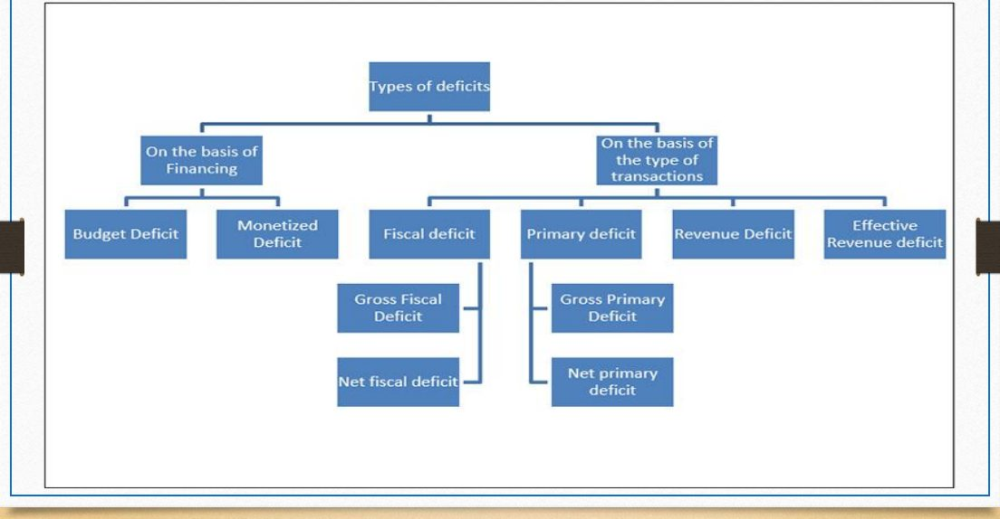
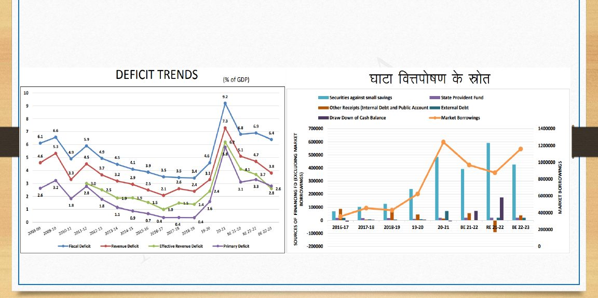
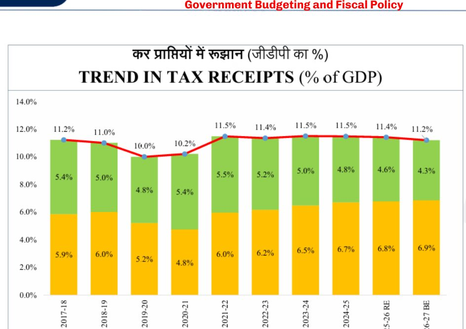
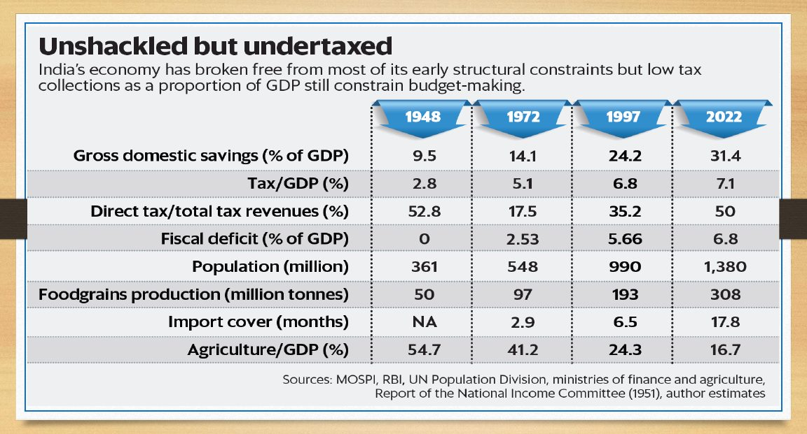

The full GST story; section 10 here is the recap and the later changes.
Economy · GS Foundation · Chapter 12
Government Budget and Fiscal Policy
Class slides + handoutSlides 314-342, handout pages 1-57No PYQs quoted
Why a budget exists (Articles 112 and 113), its three functions, revenue and capital accounts, budget deficit and monetisation, WMA, fiscal deficit and its cousins, FRBM and the N.K. Singh Committee, public debt and the IR-GR rule, Finance Commission devolution, central sector and centrally sponsored schemes, Budget 2026-27 numbers, the classification of taxes, MAT, GST recap, revenue neutral rate, Laffer curve, elasticity and buoyancy, and the slide-only topics (growth and investment models, tax evasion, PPP).
Chapter map#
- Budget and fiscal policy
Why a budget
- Art. 112 AFS; Art. 113 Lok Sabha
- Public trust: transparency + permission
- Functions: equity, efficiency, stabilisation
- Budget Division, DEA
Accounts
- Asset-liability test
- RR, RE, CR, CE
- Grants to States are RE
- Interest RE, principal CE
Deficits
- BD, monetised deficit; WMA 1997
- FD = TE − NDR = borrowing
- PD = FD − interest; RD = RE − RR
- ERD
FRBM
- 2003: FD 3%, RD zero
- Amended 2004, 2012, 2015, 2018
- N.K. Singh: debt 60% (40/20)
- Escape clauses; counter-cyclical
Debt
- Public debt + other liabilities
- External public debt vs nation
- PDMA / PDMC
- IR < GR; Δd ≈ (i−g)d + p
Federalism
- Art. 280, 275, 282
- 32% → 42% → 41%
- CS vs CSS; PMFBY trap
- 147 → 59 → 30; NITI Aayog
Taxes
- Art. 265
- Progressive, proportional, regressive
- Direct vs indirect; ad valorem vs specific
- MAT 2005; narrow base
Tax analytics
- GST recap; GST Council
- RNR
- Laffer; elasticity; buoyancy 0.72 → 1.22
- 2019 corporate cut
Exam lens: priority and PYQs#
What the handout stresses
| Signal in the handout | Where | Why it matters |
|---|---|---|
| “The Ultimate Prelims Trap”: PMFBY is a Central Sector scheme although the States pay 50% of the premium subsidy | Section 7 | Explicit trap |
| “Crucial Trap”: External Public Debt versus External Debt of the Nation | Section 6 | Explicit trap |
| Asset-liability test decides revenue versus capital; grants to States are Revenue Expenditure | Section 3 | Classification rule |
| BD → 0 after WMA (1997); FD = TE − NDR = borrowing; PD = FD − interest; RD = RE − RR; ERD | Sections 4-5 | Definitions and formulas |
| FRBM 2003: FD 3%, eliminate RD, three statements; amendments 2004, 2012, 2015, 2018 | Section 5 | Dates |
| N.K. Singh: debt anchor 60% (Centre 40, States 20); five escape clauses; counter-cyclical policy | Section 5 | Committee |
| IR < GR; five principles of debt management; Δd ≈ (i − g)·d + p | Section 6 | Concept (proof not examined) |
| Art. 280 and 275; 14th FC 32% → 42%, 15th 41%; horizontal criteria table; Art. 282 | Section 7 | Numbers and weights |
| CSS reform: 147 → 59 (Chaturvedi) → 30 (Sub-Group of CMs); 6 core of the core; 25% flexi-fund; portability | Section 7 | Numbers |
| Direct versus indirect (impact and incidence); progressive, proportional, regressive; ad valorem versus specific; MAT 2005 | Section 9 | Classification |
| RNR; Laffer curve; elasticity; buoyancy (0.72 → 1.22) | Section 11 | Concepts and numbers |
1 · Why the State exists, and why it must present a budget#
- The State is an artificial entity created by the people to provide goods the market cannot (defence, legal systems, clean air). Its authority is the right to collect taxes; its responsibility is to spend for the people.
- Accounting records the past; budgeting is accounting for the future. A government cannot be “shocked” or “unprepared”, so it must account and budget.
- Article 112 (Annual Financial Statement, AFS): the President causes a statement of estimated receipts and expenditure to be laid before both Houses every financial year. It must show separately the expenditure charged on the Consolidated Fund and other expenditure, and distinguish revenue-account expenditure from other expenditure.
- Doctrine of Public Trust: the government exists only as long as it has legitimacy. Two building blocks of trust: transparency (Art. 112) and permission (Art. 113).
- Article 113(2): the Lok Sabha may assent, refuse, or assent subject to a reduction of any demand for grants. This is “no taxation without representation”, which is why only the directly elected House votes on the budget.
2 · Budget functions and objectives#
The Budget Division (Department of Economic Affairs, Ministry of Finance) prepares the documents. The slides and handout agree on three functions:
Three functions
| Function | Objective | Meaning |
|---|---|---|
| Taxation (distribution) | Equity | Collect more from those who can give more; the budget is the tool of redistribution |
| Expenditure (allocation) | Efficiency | Provide public goods (non-rivalrous consumption); prioritise defence, infrastructure and health over populist freebies |
| Stabilisation (macro steering) | Balance | Maximising tax discourages growth; maximising spending causes inflation. Aim: desirable inflation, growth, lower unemployment, balanced regional development, exports, technology |
The slides add: “these objectives themselves are not as important as the ways to achieve them. Budget is an exercise in which every government presents its vision and strategy.”
3 · Accounting in the budget: revenue and capital accounts#
- Slides: Revenue Account Budget and Capital Account Budget. Plan and Non-Plan budget abolished since 2017 after the Rangarajan committee (2012) (slide only). Railway budget merged with the general budget. Date of presentation preponed to 1 February.
- The Constitution only says to distinguish revenue expenditure from “other”. Over time “other” became the Capital Account, and receipts are classified the same way.
- Why separate revenue? To test whether the government is viable day to day: do its rightful receipts cover its core running costs?
- The problem: “core” is subjective (defence yes; free grain for 75% or 30% of people debatable; running an airline or steel plant?). The Supreme Court is quoted: the capital-revenue distinction is “describable but not strictly definable.”
Ledger effects
| Entry | Assets | Liabilities |
|---|---|---|
| Capital Expenditure | ↑ | ↓ (or no rise) |
| Capital Receipts | ↓ | ↑ |
The four entries
| Entry | Meaning | Examples (handout) |
|---|---|---|
| Revenue Receipts (RR) | “Rightful” receipts, non-redeemable; no liability, no asset sold | Tax: Income tax, corporate tax, GST, customs. Non-tax: fines, fees, PSU dividends, interest received on loans previously given, grants from foreign nations |
| Revenue Expenditure (RE) | Maintenance expenses; creates no asset and reduces no liability | Salaries, pensions, office expenses, subsidies, interest payments |
| Capital Receipts (CR) | Money that creates a liability or reduces an asset | Debt-creating: G-Secs, T-Bills, sovereign bonds, foreign loans. Non-debt: disinvestment (e.g. Air India, LIC), recovery of loans advanced to States |
| Capital Expenditure (CE) | Creates an asset or reduces a liability | Physical: highways, ports, hospitals, fighter jets. Financial: loans to States or foreign nations, equity into a PSU. Liability-reducing: repayment of principal |
- Interest is Revenue Expenditure; repaying principal is Capital Expenditure.
- The Defence rule: routine defence maintenance (salaries, rations, ammunition) is Revenue Expenditure; purchase of fighter jets and carriers is Capital.
- Any transfer by the Centre to a State (except a loan) is Revenue Expenditure, even if the State builds a highway with it, because no asset is created for the Centre. This leads to the Effective Revenue Deficit (section 5).

4 · Deficit versus debt, budget deficit, monetisation and WMA#
- Deficit is a flow: excess of expenses over receipts in a year. Debt is a stock: the accumulation of all unpaid past deficits.
- Budget Deficit (BD) = Total Expenditure − Total Receipts. TE is the government’s intentions; TR its capabilities. A habitual BD admits it cannot keep its promises: the budget becomes “political theatricality” and public trust is shattered.
- CADP / AIBP paradox: the Command Area Development Programme (1974) announced canals the budget could not fund, so in 1996 the Accelerated Irrigation Benefit Programme (AIBP) was launched to complete the old scheme.
- Monetised Deficit: the part of BD financed directly by RBI printing money against government bonds.
Why monetisation is catastrophic
| Consequence | Explanation |
|---|---|
| Loss of central bank independence | RBI becomes the government’s printing press and cannot control money supply |
| Destruction of currency integrity | RBI’s balance sheet fills with bonds of a heavily indebted government; trust in the note collapses; run-away inflation |
| Inflation | Excess money. Excess-money inflation is controllable; inflation from permanent loss of trust is structural |
WMA (1997): ending the deficit habit
- In 1997 RBI and the government entered agreements that effectively abolished BD and monetisation; the most important was the Ways and Means Advances (WMA) Agreement. The government promised not to present a BD.
- RBI in return helps with temporary liquidity mismatch (expenses are daily, receipts periodic). Two loans, to the Centre and States:
WMA
| Type | Feature |
|---|---|
| Normal WMA | Short-term, unsecured overdraft based on the government’s minimum balance |
| Special WMA | Beyond the Normal limit; needs collateral (G-Secs or T-Bills) |
RBI and governments (Centre and States) meet before each budget to decide the amount and manner of WMA. These loans are strictly short term.
Market discipline fails
- After WMA the logic was that the market would punish indiscipline by refusing to lend or charging high rates. It failed: the government that borrows is not the one that repays. Milton Friedman’s image: spending is like alcohol, the good effects come immediately and the hangover (inflation) later; discipline is withdrawal.
- Inter-generational inequity: the present generation enjoys the benefit, the children repay, and the future loses the ability to borrow in need. Example: Oil Bonds (2005-2012): with crude prices high, the government issued bonds to oil marketing companies instead of raising petrol prices; today’s taxpayers pay the interest and were told lower oil prices could not be passed on because of the old debt.
- Intra-generational inequity: heavy borrowing causes crowding out (less money for the private sector, higher interest rates for everyone), and the resulting inflation hurts the poor (Engel’s law, Chapter 6).
- Debt is not bad by itself: government spending has a multiplier (AD = C + G + I + X − M; a rise in G raises C and then I, so AD rises by more). But borrowing must stay within sustainable limits or the result is recession with very high inflation.
5 · The FRBM Act and the family of deficits#
FRBM Act, 2003
- Parliament legally bound its own hands. Original requirements: (1) keep Fiscal Deficit within 3% of GDP, within 5 years; (2) eliminate Revenue Deficit, within 5 years; (3) present three statements with the budget:
- Macro-Economic Framework Statement: growth prospects, GDP estimates, external sector balance.
- Medium-Term Fiscal Policy (MTFP) Statement: three-year rolling targets for Fiscal Deficit, Revenue Deficit and Debt.
- Fiscal Policy Strategy Statement: strategic priorities, taxation and expenditure policy, justification for major deviations.
- Together these are the “fiscal consolidation roadmap”. The deadlines were missed, the Act was amended repeatedly, and its credibility fell.
The deficits
Definitions
| Deficit | Formula or meaning | Handout point |
|---|---|---|
| Fiscal Deficit (FD) | TE − Non-Debt Receipts (NDR) = Debt CR = borrowing in the year | Derivation: since BD = 0 after WMA, TR = TE, so RR + Debt CR + Non-Debt CR = TE, hence Debt CR = TE − (RR + NDCR) |
| Gross FD (GFD) | TE − NDR: actual borrowing | |
| Net FD (NFD) | GFD less the government’s lending to States and PSUs | Shows how much the government borrows for its own use |
| Primary Deficit (PD) | FD − interest payments | Interest is the largest, non-discretionary item (all past debt); removing it shows the current government’s own shortfall. Gross and Net versions exist |
| Revenue Deficit (RD) | RE − RR | Government is borrowing just to run itself: “the hallmark of an unsustainable State”; FRBM targeted its elimination |
| Effective Revenue Deficit (ERD) | RD − grants for creation of capital assets (A) | Transfers to States are RE of the Centre but may build assets (CSS: village roads, hospitals, irrigation, power). Add A to CE for Effective Capital Expenditure; deduct A from RE for Effective RE |
The glide path and the amendments
FRBM glide path (handout table)
| Year | FRBM FD target | Actual FD | Reason |
|---|---|---|---|
| 2003-04 | Baseline | 4.5% | Pre-FRBM baseline |
| 2004-05 | ~4.2% | 4.0% | Strong tax buoyancy |
| 2005-06 | ~3.9% | 4.1% | Slight slip |
| 2006-07 | ~3.6% | 3.5% | GDP growth above 9% |
| 2007-08 | 3.0% | 2.5% | Overachieved; corporate tax collections |
| 2008-09 | 2.5% (budgeted) | 6.0% | Global Financial Crisis, 6th Pay Commission, ₹71,000 crore farm loan waiver, oil bonds |
| 2009-10 | 3.0% | 6.5% | Stimulus: excise cuts, high expenditure |
Amendments
| Year | Change |
|---|---|
| 2004 | Sunset date for targets pushed from 2008 to 2009 |
| 2012 | ERD introduced; deadline pushed to 2015 |
| 2015 | Deadlines pushed again to 2018 |
| 2018 | Act overhauled on N.K. Singh Committee lines. RD and ERD targets scrapped; FD target pushed to 3% by 2021 |
N.K. Singh Committee (2016)
The original escape clause (“extraordinary circumstances”) was vague; the government suspended the Act in 2009. The Committee recommended:
- Debt as the primary anchor, deficit as the operational target. A ceiling for General Government Debt at 60% of GDP (Centre 40%, States 20%).
- Objective escape clauses: (a) national security or act of war; (b) national calamity; (c) collapse of agriculture severely affecting farm output and incomes; (d) structural reforms with unanticipated fiscal implications; (e) a quarterly fall in real output growth of at least three percentage points below its average of the previous four quarters.
- Counter-cyclical fiscal policy: save in booms to have room to borrow and spend in recessions.
Pro-cyclical reality versus counter-cyclical policy
| Parameter | High growth phase | Low growth phase |
|---|---|---|
| Ability to borrow and resources (taxes) | High | Low |
| Need to spend | Low (economy doing well) | High (e.g. high unemployment) |
| Actual spending (pro-cyclical reality) | High, because ability is high | High but relatively less, through unsustainable borrowing; expenditure is rigid downwards |

6 · Public debt, other liabilities and debt sustainability#
Total liabilities of the Government of India
| Part | Where it sits | What it is |
|---|---|---|
| Public Debt | Consolidated Fund of India | Borrowed from the market to finance the Fiscal Deficit via G-Secs and T-Bills; a direct contractual obligation. Sovereign debt is the international term for this. Slides: Internal Debt (owed to residents) and External Public Debt (owed to non-residents: FIIs, foreign governments) |
| Other Liabilities | Public Account of India | Money held in the government’s custody as banker or trustee, with interest and principal owed: NSSF, Provident Funds, Pension Funds (NPS), Judicial Deposits. Slides name the Public Provident Fund and NPS |
Total Liabilities = Public Debt + Other Liabilities.
Who manages the debt: RBI, PDMA and PDMC
- RBI is the government’s debt manager and also the monetary authority. The conflict: as monetary authority it fights inflation (raises the cost of money); as debt manager it wants the cheapest loans.
- The government has several times proposed an independent Public Debt Management Agency (PDMA). At present an interim Public Debt Management Cell (PDMC) exists within the Ministry of Finance for internal debt; the transition is incomplete and RBI still plays a major role.
Five principles of debt management
- Minimise the cost of borrowing.
- Prefer domestic over external sources: owed in rupees; avoids geopolitical pressure.
- External debt in domestic currency (FII purchase of rupee G-Secs, Masala Bonds). Dollar debt plus rupee depreciation can explode the burden (Sri Lanka, Latin America).
- Elongate maturity (10, 20 or 40 years), because short-term debt such as 91-day T-Bills creates rollover risk.
- IR < GR: the interest rate must stay below the growth rate of the economy.
Why IR < GR: the debt dynamics
Let d = debt/GDP, i = nominal interest rate, g = nominal GDP growth, p = primary deficit as % of GDP. Starting from FD = PD + interest and interest = i × last year’s debt, the handout derives:
Two scenarios
| Scenario | Example | Result |
|---|---|---|
| A: i < g (sustainable) | i = 6%, g = 10%, so (i − g) = −4% | The snowball melts the debt ratio; a small primary deficit is affordable; “the nation outgrows its liabilities” |
| B: i > g (debt trap) | g = 4%, i = 7%, so (i − g) = +3% | Even with zero primary deficit the ratio rises; only a primary surplus stops it, which is “political suicide” |
Slide 15 adds the definition of External debt of a country: the external debt of the government plus citizens towards the rest of the world; ECBs are a large component.
7 · Expenditure and fiscal federalism#
- Unitary bias: the Centre has more and richer tax powers and fewer direct responsibilities than States. Corporate taxes are recorded where a firm is headquartered but earned across the country, so “it is India’s wealth”. Rich States can spend on infrastructure and tax breaks; poor States (Meghalaya, Bihar) cannot even pay salaries without the Centre as equaliser.
- Two channels: (a) Finance Commission devolution and grants, (b) scheme-based transfers.
Finance Commission (Articles 280 and 275)
- Art. 280: the President constitutes a Finance Commission every five years; it is a neutral umpire dividing the net proceeds of taxes: vertical devolution (Centre versus all States) and horizontal devolution (among States).
- Art. 275 (safety net): statutory grants-in-aid from the Consolidated Fund of India for structurally weak States with a revenue deficit; legal, unconditional rights.
- Art. 282: the Centre (or States) may make grants for any “public purpose”, even outside legislative competence. This is the route of discretionary scheme transfers.
- Vertical: the 14th FC (Y.V. Reddy, 2015-20) raised the States’ share of central taxes from 32% to 42%. The 15th FC (N.K. Singh, 2021-26) recommended 41%; the 1% fall is because J&K became a Union territory (adding J&K and Ladakh, the share slightly increased). The 16th FC has been set up.
Horizontal devolution: weights
| Criterion | 14th FC (2015-20) | 15th FC (2021-26) | Rationale |
|---|---|---|---|
| Income distance | 50.0% | 45.0% | Core equity metric: per-capita income against the richest State; poorer States get more |
| Population (1971) | 17.5% | 0.0% | Dropped; protected States that controlled population |
| Population (2011) | 10.0% | 15.0% | Absolute administrative need; angered Southern States |
| Demographic performance | 0.0% | 12.5% | New; rewards lower Total Fertility Rates (to pacify Southern States) |
| Area | 15.0% | 15.0% | Larger States cost more to administer |
| Forest cover / ecology | 7.5% | 10.0% | Rewards preserving forests |
| Tax and fiscal efforts | 0.0% | 2.5% | New; rewards tax-collection efficiency |
| Total | 100% | 100% |
Demographic argument: the Southern States did not use coercive laws; they went through an earlier demographic transition driven by industrialisation, female literacy and maternal healthcare. As Northern States urbanise, their TFR is falling too.
Central Sector Schemes versus Centrally Sponsored Schemes
CS versus CSS
| Central Sector (CS) | Centrally Sponsored (CSS) | |
|---|---|---|
| Subjects | Union List or direct central intervention | State or Concurrent List (health, education, agriculture) |
| Execution | Entirely by Central machinery | By the State government |
| Funding | Typically 100% Centre (PM-KISAN, BharatNet, defence procurement) | Centre gives a grant-in-aid to the State; State adds its matching share (usually 40%) |
| Friction | Low | Primary source of friction in federalism: ties up State treasury funds |
Slide 11 lists the examples: Central Sector: MIS and Price Support, PM-KISAN, Crop Insurance Scheme, Interest Subvention Scheme, NBC, BARC, Ayushman Bharat, FAME India, Khelo India and more. Centrally Sponsored Schemes are shown as a table of core-of-the-core and core schemes.
From command and control to cooperative federalism
- Planning Commission era: the Centre used Art. 282 to make State-subject schemes with tied grants. A State with its own working scheme (the handout names Tamil Nadu’s Mid-day Meal) had to drop it, adopt the Centre’s and obey its conditions. Pre-election schemes overlapped (Sabla and Indira Gandhi Matritva Sahyog Yojana).
- 2011: CSS had grown to 147 schemes. The B.K. Chaturvedi Committee recommended pruning to 59.
- 2014 shift: (1) the 14th FC raised devolution from 32% to 42%, leaving less money for conditional CSS; (2) market orientation made top-down planning obsolete; (3) regional parties demanded cooperative federalism. The Planning Commission was abolished in 2014 and replaced by NITI Aayog.
- NITI Aayog’s first Governing Council set up a Sub-Group of Chief Ministers (headed by Shivraj Singh Chouhan, then CM of Madhya Pradesh). It capped CSS at 30 in three buckets:
The three buckets
| Bucket | Features | Examples |
|---|---|---|
| Core of the Core (6) | Social protection umbrellas for the most vulnerable; first charge on the budget (funding cannot be cut) | MGNREGA, NSAP, umbrella schemes for SCs, STs and Minorities |
| Core (~22-24) | Shared usually 60:40. 25% Flexi-Fund: States may use 25% of the allocation to tweak components | Jal Jeevan Mission, PM Awas Yojana, National Health Mission |
| Optional | States may adopt, ignore or replace. Portability clause: an unused lump sum can be moved into a Core scheme | Border Area Development Programme |
Outcome (handout): the Optional category “withered away”: States did not tie up their own funds for optional schemes and used portability to boost Core schemes.
Major expenses of the Centre
- A. Centre’s Expenditure: (a) Establishment expenditure; (b) Central Sector Schemes; (c) other expenses such as interest payment.
- B. Central Transfers: (a) Finance Commission grants (revenue-filling or sector-specific); (b) CSS; (c) grants or loans to States.
- Composition of transfers (handout chart): a large share is Finance Commission transfers (devolution under Art. 280 and grants under Art. 275); schemes and other transfers under Art. 282 are the rest. Devolution is untied and rising: “this is fiscal federalism.”
8 · Receipts and the Budget at a Glance (2026-27)#
![Handout page 39: “Budget at a Glance” (₹ crore), Actuals 2024-25, BE 2025-26, RE 2025-26 and BE 2026-27. For 2026-27 BE: revenue receipts 35,33,150; capital receipts 18,14,165 (recovery of loans 38,397; other receipts 80,000; borrowings and other liabilities 16,95,768); total expenditure 53,47,315; interest payments 14,03,972; effective capital expenditure 17,14,523; revenue deficit 5,92,344 (1.5% of GDP); effective revenue deficit 99,642 (0.3%); fiscal deficit 16,95,768 (4.3%); primary deficit 2,91,796 (0.7%). Footnote: GDP for 2026-27 is estimated at ₹393,00,393 crore.](img/eco-budget-glance.jpg)
Budget 2026-27 BE: how the identities work
| Item | Figure (₹ crore) | % of GDP | Check |
|---|---|---|---|
| Fiscal Deficit | 16,95,768 | 4.3% | = Borrowings and other liabilities = TE − (RR + recovery of loans + other receipts) |
| Revenue Deficit | 5,92,344 | 1.5% | = Revenue expenditure 41,25,494 − Revenue receipts 35,33,150 |
| Effective Revenue Deficit | 99,642 | 0.3% | = RD − grants for capital assets 4,92,702 |
| Primary Deficit | 2,91,796 | 0.7% | = FD − interest payments 14,03,972 |

- Tax:GDP is stable (the handout says it was the same 20 years ago). The key change is the rising share of direct taxes. Net receipts have risen, but as a share of GDP they are almost the same.
- Receipts pie (handout): the share of Income tax on individuals is greater than any other tax, including corporation tax. “Do not jump to conclusions so quickly” (see section 9).
- Slide 12 (Budget Profile) draws the receipts and expenditure of the Centre as one picture (budget size ₹39.45 lakh crore in the slide; gross tax revenue, net tax receipts, non-debt capital receipts, debt receipts on one side; scheme expenditure, transfers and establishment, interest payment on the other).
9 · Taxation: law, classification and the direct tax picture#
- Taxation is the financial execution of the social contract for goods that are non-rivalrous and non-excludable. It is “forceful extraction”, so Article 265: “No tax shall be levied or collected except by authority of law.”
- Structure of a tax law: (1) taxable event; (2) taxable value (deductions, exemptions); (3) rate; (4) responsible entity; (5) manner of payment and collection (TDS, advance tax; designated department).
Classification of taxes
| Basis | Types | Handout examples and notes |
|---|---|---|
| Distributive features (slide 18, handout) | Progressive: rate rises with taxable amount. Proportional: flat rate. Regressive: the rate falls as income rises (the poor pay a larger share) | Progressive: income tax (5% to 30%). Proportional: corporate tax (~25% small, 30% larger; flat within each tier). Regressive: indirect taxes on goods (same tax on a biscuit packet; the government uses luxury and necessity slabs to make it progressive). Direct tax can turn regressive when the rich evade and the salaried middle class bears the burden |
| Bearer of burden | Direct: impact (initial liability) and incidence (final burden) on the same person. Indirect: impact on one, incidence on another | Direct: income tax, corporate tax. Indirect: GST on the seller (impact), shifted to the consumer (incidence). The seller must still deposit the tax. Exceptions: GST Reverse Charge Mechanism (buyer deposits); TDS (payer deposits) |
| Method of levying | Ad valorem: a percentage of value. Specific: based on a physical characteristic regardless of price | Ad valorem: 18% GST on a phone, 7% stamp duty, 10% customs. A higher rate for luxuries (28%) does not change its nature. Specific: excise on volume of fuel, carbon tax on coal (e.g. ₹400 per tonne), professional tax (₹2,500 a year). Compound duty: both together, e.g. cigarettes (ad valorem on MRP plus specific on filter length) |
Taxes by event (handout and slide 19)
| Tax | Event | Levying entity | Pays government | Bears burden |
|---|---|---|---|---|
| Income tax | Earning income (IT Act 1961, now 2025 Act) | Centre | Earner | Earner |
| Corporate income tax | Profits of a company | Centre | Company | Company |
| Minimum Alternate Tax (MAT) | If tax paid is less than the threshold (slide: only if CIT is below 18% of profits under the Companies Act) | Centre | Company | Company |
| Professional tax | Being a professional | State | Professional | Professional |
| Excise duty | Production | Centre | Producer | Buyer |
| Customs duty | Entry into a country | Centre | The importer (changer of boundary) | Buyer |
| Entry tax / Octroi | Entry into a State / local body | State / Local body | The importer | Buyer |
| Service tax | Sale of service | Centre | Seller | Consumer |
| Central Sales Tax | Inter-State sale of goods | Centre, given entirely to the selling State | Seller | Buyer |
| Sales tax / VAT | Intra-State sale | State | Seller | Buyer |
| GST | Sale of goods and services | Centre + State | Seller | Buyer |
Other direct taxes: Wealth tax (Centre; now abolished), Professional tax (States), capital gains tax (part of IT).
Income tax in the handout
- The IT Act, 1961 (replaced by the 2025 Act) recognises five heads of income: Salaries, House Property, Business/Profession, Capital Gains, Other Sources. Agriculture is a source of income but the Centre cannot tax it; only States can, and no State does.
- A tax law must: recognise income (borrowing is a liability, not income; only the ₹2,000 profit on a ₹8,000 saree sold for ₹10,000 is income), determine taxable value (flat 30% standard deduction on rent; earlier indexation on real-estate capital gains), apply rates by asset class and holding period, and collect (TDS).
- Exemptions are a nudge towards “good” expenses (health and life insurance, housing, capital goods, charity). To stop firms avoiding a fair minimum, MAT was introduced in 2005 (tax on profits declared under the Companies Act, 2013); for individuals the equivalent is the AMT (Alternate Minimum Tax).
Complexity feeds evasion
- Law works only if the cost of compliance is low and the cost of non-compliance is high, both together (speed-limit example).
- A 700-page Act amended yearly to stop evasion has become the facilitator of evasion: honest taxpayers need chartered accountants (high compliance cost) and the State cannot track every creative scheme (low non-compliance cost). The rich exploit it (trusts, shell companies, “agricultural” farmhouses). A simpler Direct Tax Code (DTC) makes evasion harder.
Corporate versus personal tax: busting the myth
- In 2019 the base corporate rate was cut from about 30% to 22% (15% for new manufacturing). From 2021 onwards PIT collections surpassed CIT.
- The handout argues this is not inherently anti-poor: companies do not consume; profits reach individuals as dividends and salaries, which are then taxed as personal income. In most G7 economies corporate tax is below 10% of tax revenue; India’s CIT share is about 22-26%.
The narrow tax base
- Of 140 crore people only 8-9 crore file returns; about 7 crore are zero-tax filers; the effective taxpaying base is under 2 crore (about 1.5%). The top 1% of taxpayers bear nearly 90% of direct tax, mostly the salaried middle class under TDS.
- The handout calls the new Direct Tax Code “a moral imperative” to widen the net.

10 · From VAT to GST: the recap in this handout#
VAT: achieved and not solved
| What VAT achieved | What VAT could not solve |
|---|---|
| Reduced cascading within State taxes; tax effectively on value addition | No ITC across different taxes: VAT could not be offset against excise (Central) or service tax; excise could not be offset against VAT, so cascading continued |
| Self-policing: the buyer wants an invoice to claim ITC | No ITC across States: VAT paid in Maharashtra not offset-able in Gujarat; inter-State trade still bore CST (non-creditable) |
| Lower effective burden and better compliance | Fragmented rates: each State had its own rates, exemptions and procedures: 29 VAT laws |
- GST (101st Amendment Act, 2016; effective 1 July 2017): tax on supply of goods and services other than alcohol for human consumption. Three properties: one nation-one tax (subsumes excise, service tax, VAT, CST, entry tax, octroi, luxury tax), destination-based (a shirt made in Tamil Nadu and sold in Delhi gives the State component to Delhi), and seamless ITC (across goods and services, across CGST and SGST and IGST, and across all stages).
- Example: a ₹1,000 intra-State sale at 18% gives CGST ₹90 to the Centre and SGST ₹90 to the State; an inter-State sale gives IGST ₹180 collected by the Centre (half shared with the destination State later).
- GST Council (Art. 279A): Union FM chair; Vice-Chairperson a State Finance Minister elected by State members; members: Union MoS (Finance) and Finance/Taxation Ministers of all States and UTs; quorum 50%; weights Centre 1/3, States 2/3; majority 75%, so the Centre cannot decide alone. Recommendations are not constitutionally binding, but in practice both sides implement them.
Federalism debate
| States’ argument | Counter-argument (handout) |
|---|---|
| GST destroyed fiscal autonomy: earlier a State could raise VAT overnight for drought relief. Kerala floods (2018) and COVID (2020) are cited: States could not raise indirect taxes unilaterally | Old autonomy meant barriers to trade, octroi and check-post harassment, and 29 different VAT rates. A unified market gave the consumer and honest businessman more. Ease of Doing Business rank: 130 (2017), 77 (2019), 63 (2020). Gains for States: higher revenue, Centre borrowing on their behalf in COVID, a national common market (Art. 301-307), end of check-post raj |
Inverted duty structure (GST 1.0)
When the input tax rate is higher than the output rate, ITC piles up and the firm depends on refunds. The handout’s examples: textiles (input 12-18% against 5% on fabric), pharmaceuticals (12-18% on APIs and packaging, against 5-12% on medicines), fertilisers (5-18% inputs, 5% or exempt output) and export-oriented units (0% on exports). FY 2025-26: ₹1.5 lakh crore+ refunds pending (all categories). The simple fix is aligning rates; it was not done because of political sensitivity, revenue loss and lobbying. GST 2.0 (August-September 2025) addressed it by rationalising rates.
- Final assessment: a unified market, irreversible formalisation (1.44 crore businesses in the formal system), check-posts gone, and, in the handout’s words, “cascading is 70% eliminated, the remaining is only and only because of petroleum.” Gaps: refunds, litigation, rates, petroleum, federalism tensions. For consumers, goods cheaper but services costlier; SMEs mixed; large enterprises clear winners.
11 · Revenue Neutral Rate and the three pillars of tax analytics#
Revenue Neutral Rate (this handout)
The RNR is the rate that gives the government the same revenue as under the old laws. The handout’s reasoning: pre-GST effective indirect-tax incidence was about 33% of a good’s value. India’s Tax:GDP is about 15-17% (Centre 11-12%, States about 5%); of the Centre’s ~11%, about 6% direct and 5% indirect; States’ VAT about 5%. So indirect taxes were about 10% of GDP. If 33% × X% of GDP = 10% of GDP, X ≈ 30%: only about 30% of GDP was actually being taxed.
If GST widens the base
| Share of GDP taxed | RNR needed to still collect 10% of GDP |
|---|---|
| ~30% (pre-GST) | 33% |
| 40% | 25% (a quarter) |
| 50% | 20% (a fifth) |
Because how much more would be taxed was unknown, rates had to be set up front, hence multiple slabs at the start (goods placed in the nearest slab to protect revenue). The government set up the Arvind Subramanian (ex-CEA) committee to recommend the RNR.
1 · The Laffer Curve
An inverted U: tax rate (0-100%) on the X-axis and revenue on the Y-axis. At 0% revenue is zero; at 100% nobody works, so revenue is again zero; somewhere between lies an optimal rate (t*). Beyond it, higher rates encourage evasion and reduce economic activity, so revenue falls. Since t* is unknown, governments experiment.
2 · Tax elasticity (responsiveness to policy)
Holding GDP and other factors constant: Tax Elasticity = % change in tax revenue ÷ % change in tax rates. If a 10% rate rise raises revenue only 2% (evasion), the tax is highly inelastic.
The 2019 corporate tax cut: Laffer curve in action
| Category | Old rate | New rate |
|---|---|---|
| Existing domestic companies | 30% + surcharge (~35% effective) | 22% + surcharge (~25.17% effective), about 10 percentage points lower |
| New manufacturing companies (post Oct 2019) | 25% | 15% + surcharge (~17.01%), about 8 percentage points lower |
| Revenue cost estimate | ₹1.45 lakh crore a year |
Corporate tax collections (₹ crore)
| Year | Collection | YoY growth | Note |
|---|---|---|---|
| 2018-19 | 6,63,572 | 17.1% | Pre-cut baseline |
| 2019-20 | 5,56,876 | −16.1% | Cut announced Sept 2019; COVID approaching |
| 2020-21 | 4,57,719 | −17.8% | Full COVID year |
| 2021-22 | 7,12,037 | +55.6% | Recovery and base effect |
| 2022-23 | 8,25,834 | +15.9% | Strong recovery |
| 2023-24 | 9,11,735 | +10.4% | Settled growth |
| 2024-25 | 10,22,000 | +12.1% | Continued buoyancy |
The government’s Laffer argument: at about 35% India was in the “prohibitive zone”, near or beyond t*; a cut to about 25% would attract FDI, reduce profit shifting to tax havens, encourage reinvestment and bring more companies into the formal system. Verdict (handout): revenue fell first (FY20, FY21), then surged (FY22: ₹7.12 lakh crore; FY23: ₹8.25 lakh crore). Lower rates plus a digitised compliance net generated more revenue.
3 · Tax buoyancy (responsiveness to growth)
Holding tax rates and policy constant: Tax Buoyancy = % change in tax revenue ÷ % change in nominal GDP. Greater than 1 means collections grow faster than GDP without tax hikes; the tax net is capturing new wealth efficiently.
Pre-GST versus post-GST buoyancy
| Period | Buoyancy | Reading |
|---|---|---|
| Pre-GST (2012-13 to 2015-16) | 0.72 (States’ subsumed taxes, Interim Budget 2024 data) | For every 1% GDP growth, collections grew only 0.72% |
| Post-GST (2017-18 to 2022-23) | 1.22 (SGST revenues) | GST fundamentally expanded the formal sector, even through COVID |
12 · Slide-only topics (no handout text): growth models, tax evasion and PPP#
Growth and investment models (slides 24-28)
- Objectives of the budget: growth. Trickle-down approach: the top grows and benefits are redistributed through government policy; “the bottom is passive beneficiary.” Inclusive growth (slide diagram): reduction of poverty, job creation, enhancement of skills, reduction of regional disparities, access to essential services like health and education, special focus on vulnerable groups, industrial development.
- Sustainable Development Goals (slide 25): the 17 goals, from No Poverty to Partnerships for the Goals.
- Investment models: import substitution; Harrod-Domar model (savings, investment and ICOR); heavy-industry led growth: the Mahalanobis model: increasing investments; directing public investment towards industry (predominance of the public sector in capital goods); import substitution for self-reliance; an elaborate system of controls and industrial licensing.
- Export-led growth; Aatmnirbhar Bharat. Schumpeter’s three stages: (1) growth from more factors of production (transition from primary sector to industry: agrarian China to industrial China); (2) growth from higher productivity of factors (investment raises productivity); (3) growth from inventing new ways to raise productivity (research and innovation: “modern America”).
- Public-Private Partnership: the need arises from the thin spread of government resources and the wish to include the private sector in public goods that can be monetised. The 4 Rs to decide in any agreement: Resources, Risks, Responsibilities, Rewards. Standard contracts: BOT, EPC, HAM (hybrid annuity model), Swiss Challenge model, Viability Gap Funding.
Tax planning, avoidance and evasion (slide 23)
Three terms
| Term | Slide definition |
|---|---|
| Tax planning | Legal, legitimate way to reduce taxable income through acceptable expenses and investments |
| Tax avoidance | “May not be illegal, but certainly illegitimate” |
| Tax evasion | Illegal |
The slide also lists: BEPS (Base Erosion and Profit Shifting); related-party transactions, the arm’s length principle, advance pricing agreements; DTAA (double taxation avoidance agreements); GAAR (General Anti-Avoidance Rules); and money laundering and round tripping (referred to the Security classes).
Timeline and numbers#
- Command Area Development Programme launched.
- CENVAT/MODVAT: VATting of excise.
- AIBP launched to complete old irrigation projects.
- WMA Agreement: government stops presenting a Budget Deficit; deficit monetisation ends.★
- FRBM Act: FD 3%, eliminate RD, three statements.★
- FRBM sunset date moved from 2008 to 2009.
- State VAT; MAT introduced.
- Oil Bonds issued to oil marketing companies.
- FD 6.0% against FRBM target (crisis, 6th Pay Commission, farm loan waiver, oil bonds).★
- CSS had grown to 147 schemes; B.K. Chaturvedi Committee suggested 59.
- ERD introduced; FRBM deadline moved to 2015. Rangarajan committee (Plan/Non-Plan, slide).
- Planning Commission replaced by NITI Aayog; 14th FC raises devolution to 42%.★
- FRBM deadlines moved to 2018.
- N.K. Singh Committee on FRBM; 101st Amendment (GST).★
- GST starts (1 July); Plan/Non-Plan abolished (slide).★
- FRBM overhauled; RD and ERD targets scrapped; FD 3% by 2021.★
- Corporate tax cut: 30% → 22%, new manufacturing 15%.★
- 15th FC period: 41% vertical devolution; 12.5% demographic performance weight.★
- GST 2.0 rate rationalisation (per handout).
- FD 4.3%, RD 1.5%, ERD 0.3%, PD 0.7% of GDP; GDP estimate ₹393,00,393 crore.★
Connects to#
Public goods and the origin of the State are cited from the “Basic Concepts” chapter.
Engel’s law, and why monetisation and excess spending are inflationary.
RBI as debt manager versus monetary authority; WMA; T-bills and G-Secs.
The BoP capital-account logic mirrors the asset-liability test; ECBs and external debt.
Equity function of taxation; regressive versus progressive taxes.
Next chapter in the handout set.
Recall sheet#
Read once, hide it, then rebuild the chapter from memory.
- Art. 112: Annual Financial Statement (estimated receipts and expenditure; distinguish revenue from other). Art. 113: Lok Sabha assents, refuses or reduces demands.
- Functions: taxation = equity; expenditure = efficiency; stabilisation = balance of growth, prices and employment.
- Asset-liability test: changes assets or liabilities → Capital; else Revenue. Grants to States (not loans) are RE. Interest RE; principal CE.
- BD = TE − TR; monetised deficit = RBI printing. WMA 1997: Normal (unsecured) and Special (against collateral).
- FD = TE − NDR = borrowing. PD = FD − interest. RD = RE − RR. ERD = RD − grants for capital assets.
- FRBM 2003: FD 3%, RD zero, 3 statements. Amended 2004, 2012 (ERD), 2015, 2018 (RD/ERD dropped).
- N.K. Singh: debt 60% of GDP (Centre 40, States 20); 5 escape clauses; counter-cyclical policy.
- Public debt (Consolidated Fund) + Other liabilities (Public Account). External Public Debt ≠ External Debt of the Nation.
- Debt principles: low cost, domestic, domestic currency, long maturity, IR < GR. Δd ≈ (i − g)d + p.
- FC: Art. 280 (devolution), 275 (grants), 282 (public purpose grants). 14th FC 32→42%; 15th 41%. 15th weights: income 45, pop 2011 15, demographic 12.5, area 15, forest 10, tax effort 2.5.
- CS = Centre executes; CSS = State executes, 60:40 core. PMFBY is a CS scheme (50:50 premium subsidy). CSS 147 → 59 → 30; 6 core of the core; 25% flexi-fund.
- Taxes: progressive, proportional, regressive; direct (impact = incidence), indirect; ad valorem versus specific. MAT 2005. Art. 265.
- RNR: pre-GST ~33% on ~30% of GDP = 10% of GDP. Laffer curve; elasticity (rate); buoyancy (GDP): 0.72 pre-GST, 1.22 post-GST.
- Budget 2026-27 BE: FD 4.3%, RD 1.5%, ERD 0.3%, PD 0.7%.
Test yourself#
Practice questions below are written from the handout. They are not past-year questions.
Quick quiz
0 / 0 correct
Mains practice: answer skeletons
Try the answer on a blank page first, then open the skeleton.
“The budget is the annual renewal of the social contract.” Discuss, with reference to Articles 112 and 113.
Intro: The government is an artificial entity created by the people, so its handling of money must be transparent and permitted.
- Art. 112: AFS shows estimated receipts and expenditure, separating revenue account from others.
- Art. 113(2): the Lok Sabha may assent, refuse or reduce demands for grants: no taxation without representation.
- Three functions: equity, efficiency, stabilisation.
- A habitual deficit turns the budget into political theatre and shatters trust (CADP/AIBP example).
Closing line: Transparency without permission is just a dictator’s accounts.
Explain the FRBM Act and the N.K. Singh Committee. Why did the original Act lose credibility?
Intro: FRBM 2003 was Parliament’s attempt to bind its own hands on deficits.
- Targets: FD 3%, eliminate RD, three statements (macro framework, MTFP, fiscal policy strategy).
- Deviation 2008-09 (6.0%) and 2009-10 (6.5%); amendments 2004, 2012, 2015, 2018; escape clause was vague.
- N.K. Singh: debt anchor 60% (40/20), objective escape clauses, counter-cyclical policy.
- RD and ERD targets scrapped in 2018.
Closing line: A law the lawmaker can amend at will disciplines nobody.
Distinguish Fiscal Deficit, Primary Deficit, Revenue Deficit and Effective Revenue Deficit. What do they tell us about the health of public finances?
Intro: Each deficit slices the gap between expenditure and receipts differently.
- FD = borrowing; PD = FD minus interest; RD = RE − RR; ERD = RD − capital-asset grants.
- RD means borrowing to run the government.
- Why ERD: CSS grants are revenue for the Centre but build assets in States.
- Budget 2026-27 BE: FD 4.3%, RD 1.5%, ERD 0.3%, PD 0.7%.
Closing line: Debt that builds assets is different from debt that pays salaries.
Discuss the evolution of India’s fiscal federalism from the Planning Commission to NITI Aayog.
Intro: Transfers moved from conditional schemes to untied devolution.
- Art. 280 and 275 versus Art. 282; tied CSS under the Planning Commission; 147 schemes to 59 to 30.
- 14th FC raised devolution 32% to 42%; 15th FC 41% with new criteria (demographic performance, tax effort).
- NITI Aayog, Sub-Group of CMs, core of the core, flexi-fund, portability.
- Counterpoint: GST and the loss of State tax autonomy.
Closing line: The shift is from command and control to cooperative federalism.
Explain the Laffer curve, tax elasticity and tax buoyancy. How do they help evaluate the 2019 corporate tax cut and GST?
Intro: These three measures separate the effect of rates from the effect of growth.
- Laffer: inverted U with an optimal rate t*; elasticity: revenue change per change in rate; buoyancy: revenue change per change in GDP.
- 2019: rates cut from 30% to 22%; collections fell then rose to ₹8.25 lakh crore in FY23, with other factors confounding.
- GST: buoyancy 0.72 pre-GST against 1.22 post-GST.
- Complexity raises compliance cost and encourages evasion; narrow base (under 2 crore effective taxpayers).
Closing line: A tax system is healthy when growth, not rate hikes, fills the treasury.
Flashcards
Tap the card to flip.